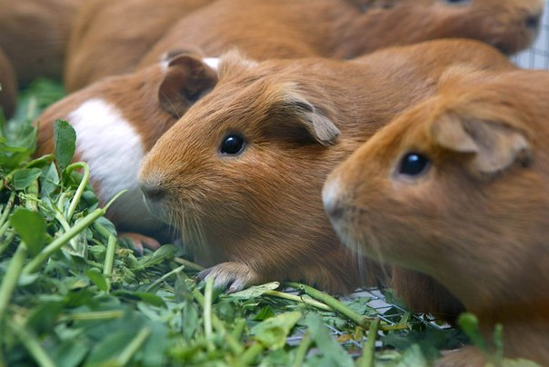

EN EL DIA DE HOY, EN SABORES MUNDIALES HEMOS TRAIDO UNA NUEVA RECETA PROVENIENTE DE PERU!! HOY TE PRESENTAMOS AL CUY FRITO CON PICANTE DE PAPA CAJAMARCA.
Para los que todavía no saben de qué se trata, el cuy es un roedor que viene de la zona central de los Andes peruanos. Lo que pocos peruanos sabían es que a este pequeño animal también se le conoce como jaca o jaka, grafía que viene del quechua que se habla en la parte de Huánuco.
La crianza del cuy data desde los 4 mil años A.C., y era usado por los antiguos peruanos como ofrenda hacia los dioses. También, en la época de los incas, era uno de los platillos principal en el menú diario.
Considerado una de las carnes más nutritivas de los andes, el cuy es uno de los platillos preferidos a la hora de festejar muchas fiestas reuniones familiares hasta matrimonios. Todo dependerá de las manos de expertas que lo preparen.

ACLARACION: Si algun dia ves un cuy, no te lo comas, no estamos en peru.
A CONTINUACION: INGREDIENTES
Papa blanca 01kg
Cuy entero eviscerado 1 unidad
Aceite vegetal
Ají panca molido 1/4kg
Ajo molido 01 cucharada
Orégano seco triturado 01 cucharada(opcional)
Sal al gusto
MODO DE PREPARACION
Pelar las papas y lavar bien. Cortar en cubos grandes.
En una olla echar las papas y un poco de agua al nivel, sal al gusto. Cocinar hasta que estén suaves.
En otra olla, sancochar el cuy en agua y sal por unos 15 minutos. Retirar el cuy de la olla y dejar escurrir.
En una cacerola calentar bien el aceite y freir el cuy hasta que esté dorado por ambos lados. Retirar y reservar.
Hacer un aderezo con unas tres cucharadas de aceite, el ají, ajo y sal al gusto. Dorar unos 4 minutos, probar el punto de sal.
Si las papas tienen mucha agua, retirar un poco. Agregar el aderezo del ají, orégano y mezclar. Debe quedar como si fuera locro.
Si deseas puedes reservar un poco de aderezo del ají y untar al cuy por encima, le da un toque especial.